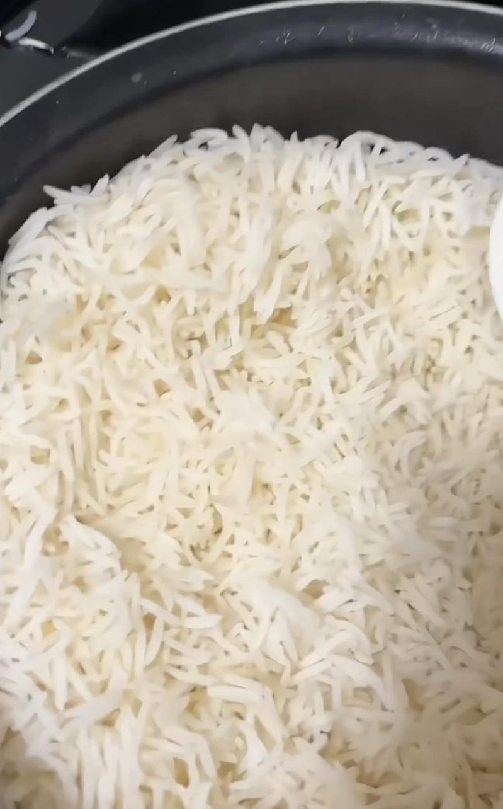

印度香米形状偏长，也称印度长米，是一种大米，以其细腻和极佳的香气而闻名。主要种植于印度和巴基斯坦。内行网友表示，印度香米升糖低，很适合糖尿病患者食用，用长米制作的中东印度料理也非常美味。
一名网友在小红书贴出一则影片，影片中电锅内的米饭形状细长，与一般常见的米粒不同，他好奇，「这是什么米呀？有几个人吃过这种长粒米？」
有内行人解释，「basmati米，虽然不如圆米口感好，但是升糖低，很适合糖屎病人吃，而且中东印度等地用这个做的香饭超级好吃」，还有人补充「这米很好的，吃两碗饭才等于你普通米的一碗饭」。
还有人表示「这个超好吃又健康」、「巴基斯坦进口长粒米，买过一次。」、「这米有种饭缩力」、「我买回来做咖喱饭和抓饭的，很好吃」、「就想买这种米，一直都吃的那种椭圆形的短粒米，感觉好难吃，还容易发胖，就想买这种丝苗米，希望以后大量种植，种不了就大量引进」。
但有人留言「吃过这种颗粒很长的不好吃」、「那口感一言难尽啊」、「印度吃这个米，超级难吃，不管做米饭还是粥，难以下咽」、「口感是松软的，没有糯叽叽的感觉，好像在干吃蜜粉」、「这真的实在不好吃，我整袋送人了，怀念东北米」、「这米怎么说呢！在沙特阿拉伯吃了两个月，没有我们的米香」、「超难吃像断了的细米粉而且又涩又散」、「我买了一包到现在只吃了第一顿」。